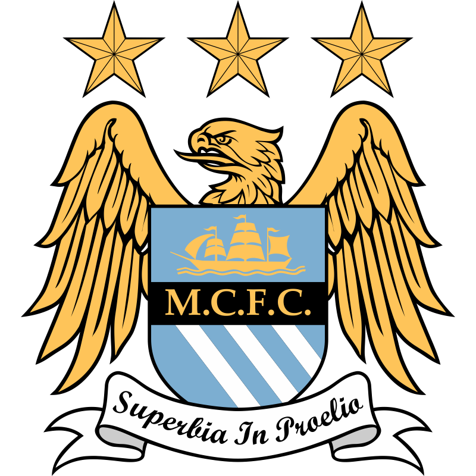

Historia del Club - Manchester City
Historia del Manchester City
El Manchester City es un club de fútbol profesional con sede en Manchester, Inglaterra. Fue fundado en 1880 como St. Mark's (West Gorton) y luego cambió su nombre a Ardwick Association Football Club en 1887. Finalmente, en 1894, adoptó su nombre actual, Manchester City Football Club. Durante sus primeros años, el Manchester City compitió en la Football League, pero no tuvo un éxito destacado. Sin embargo, en la década de 1930, el club comenzó a mostrar signos de mejoría. Bajo la dirección del legendario entrenador Joe Mercer y con jugadores destacados como Bert Trautmann, Neil Young y Colin Bell, el Manchester City ganó varios títulos importantes. El período más exitoso del club llegó en la década de 1960. Bajo la dirección del entrenador Joe Mercer y su asistente Malcolm Allison, el Manchester City ganó el título de la First Division (ahora conocida como la Premier League) en la temporada 1967-1968. Además, el equipo ganó la FA Cup en 1969, la League Cup en 1970 y la Recopa de Europa en 1970. Después de ese éxito, el Manchester City pasó por altibajos en las siguientes décadas. Experimentó dificultades financieras y descendió a divisiones inferiores en varias ocasiones. Sin embargo, en 2008, el club fue adquirido por el Sheikh Mansour bin Zayed Al Nahyan, miembro de la familia real de Abu Dhabi, lo que marcó el comienzo de una nueva era. Bajo la inversión financiera del Sheikh Mansour, el Manchester City ha experimentado un renacimiento significativo. El club ha ganado múltiples títulos de la Premier League, incluidos los campeonatos en las temporadas 2011-2012, 2013-2014, 2017-2018, 2018-2019 y 2020-2021. También ha ganado numerosas copas nacionales, incluidas la FA Cup y la League Cup. Además de su éxito en el ámbito nacional, el Manchester City ha tenido un buen desempeño en competiciones europeas, llegando a las etapas finales de la Liga de Campeones de la UEFA en los últimos años. El club juega sus partidos como local en el Etihad Stadium, ubicado en el este de Manchester. El estadio tiene una capacidad de alrededor de 55,000 espectadores y ha sido el hogar del Manchester City desde 2003. .
Jugadores que marcaron al Manchester City
Sergio Agüero | 2011-2021.
Colin Bell | 1966-1979.
David Silva | 2010-2020
Títulos Ganados
Aquí puedes mostrar los títulos ganados por el Manchester City junto con sus fechas.
Estadios
Aquí puedes mostrar imágenes de los estadios utilizados por el Manchester City a lo largo de su historia.
Dueños
Aquí puedes mostrar imágenes de los propietarios que ha tenido el Manchester City.